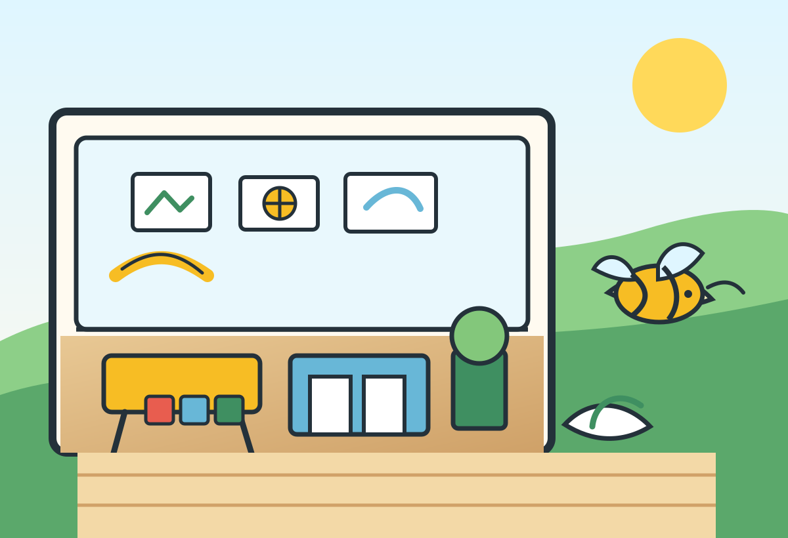

Small by Design
Children are never lost in the crowd. Our intentionally small class sizes allow teachers to truly know each child's personality, strengths, learning style, and individual needs.

Where children are nurtured like family
Where children are nurtured like family, immersed in language, and inspired to grow with confidence.
Choosing a preschool is one of the most important decisions you'll make as a parent. At Busy Bee Preschool, we understand the trust families place in us each day. Our small, intimate environment allows children to receive the individualized attention they deserve while developing academically, socially, and emotionally.
Children who attend Busy Bee Preschool don't simply pass through a program. They become part of a community built on warmth, consistency, encouragement, and genuine relationships.
Why Families Choose Busy Bee
Children are never lost in the crowd. Our intentionally small class sizes allow teachers to truly know each child's personality, strengths, learning style, and individual needs.
Children build early literacy, mathematical thinking, problem-solving skills, independence, and the social-emotional foundation needed to thrive in kindergarten and beyond.
Fresh, home-cooked organic meals are prepared with care and shared in a warm family-style setting that supports healthy habits.
Our Educational Approach
At Busy Bee Preschool, learning extends beyond worksheets and memorization. We utilize a STREAM approach that integrates Science, Technology, Reading, Engineering, Art, and Mathematics into everyday experiences.
Children build, create, experiment, observe, question, and discover. Whether they are counting ingredients during cooking activities, exploring nature outdoors, constructing structures, creating artwork, or participating in story time discussions, they are developing the foundational skills that support future academic success.
Spanish is woven throughout each day through songs, conversations, stories, routines, games, and play. Rather than treating language as a separate subject, children are immersed in Spanish as part of their everyday environment.
Our Philosophy
We believe preschool should feel like a second home. Children thrive when they feel safe, loved, and understood. Strong relationships provide the foundation upon which all meaningful learning occurs.
At Busy Bee Preschool, we prioritize connection. We celebrate individuality, encourage exploration, promote kindness, and support each child in becoming the very best version of themselves.
We recognize that parents know their children best, and we consider ourselves partners in this important journey.
A Day at Busy Bee
“At Busy Bee Preschool, your family is our family.”
Parents are kept informed and connected through open communication, transparency, and meaningful conversations about their child's growth and development.
Tours and Enrollment
Available Monday through Friday between 10:30 a.m. and 12:30 p.m.
Ages 2 years and older.
Monday through Friday, 7:30 a.m. - 5:30 p.m.
Tuition information is provided during tours.